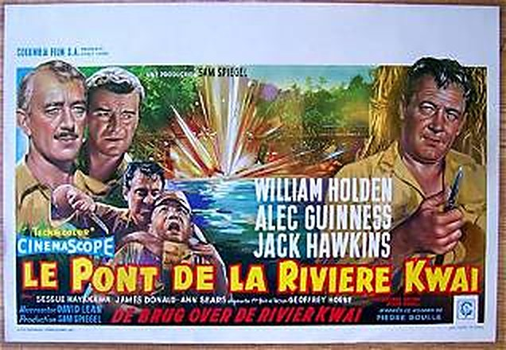
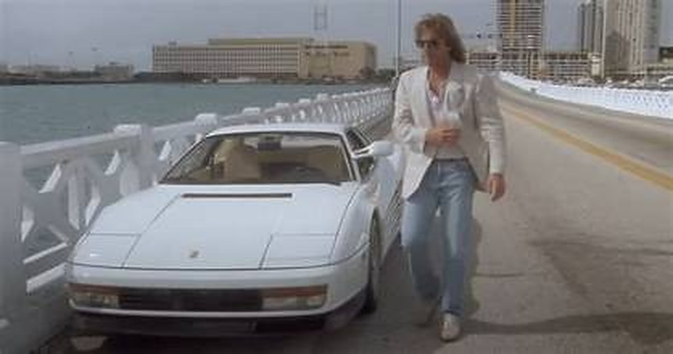
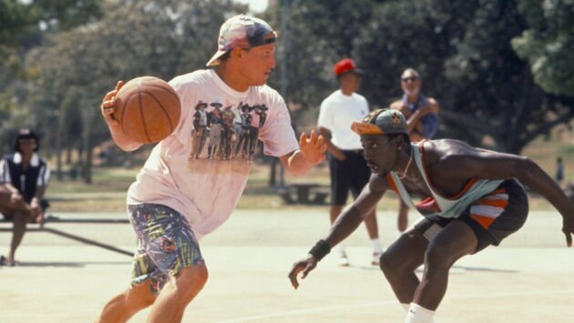
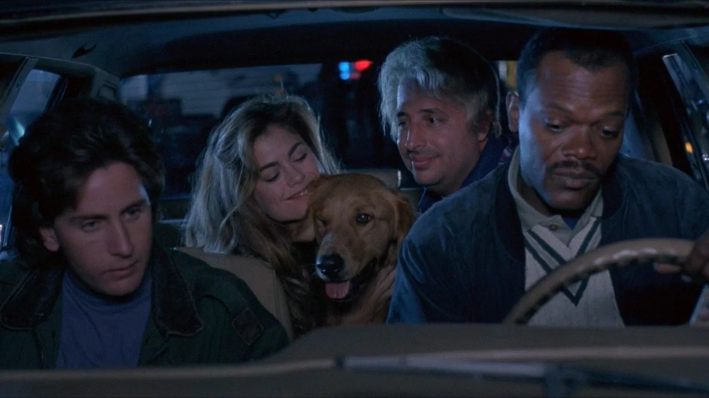
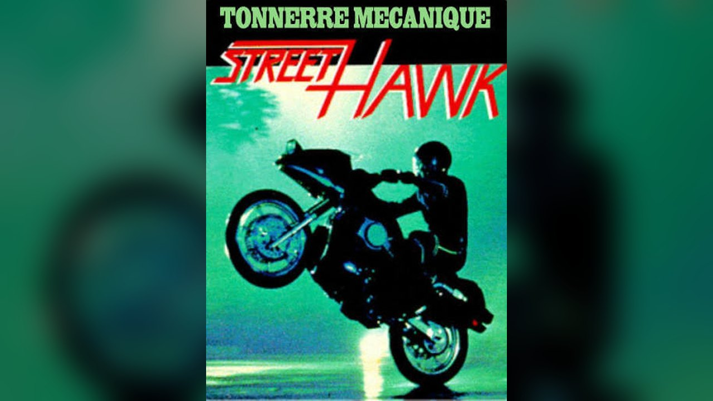
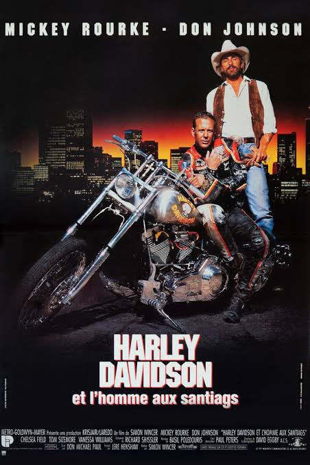
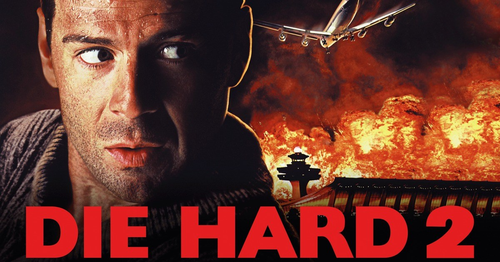
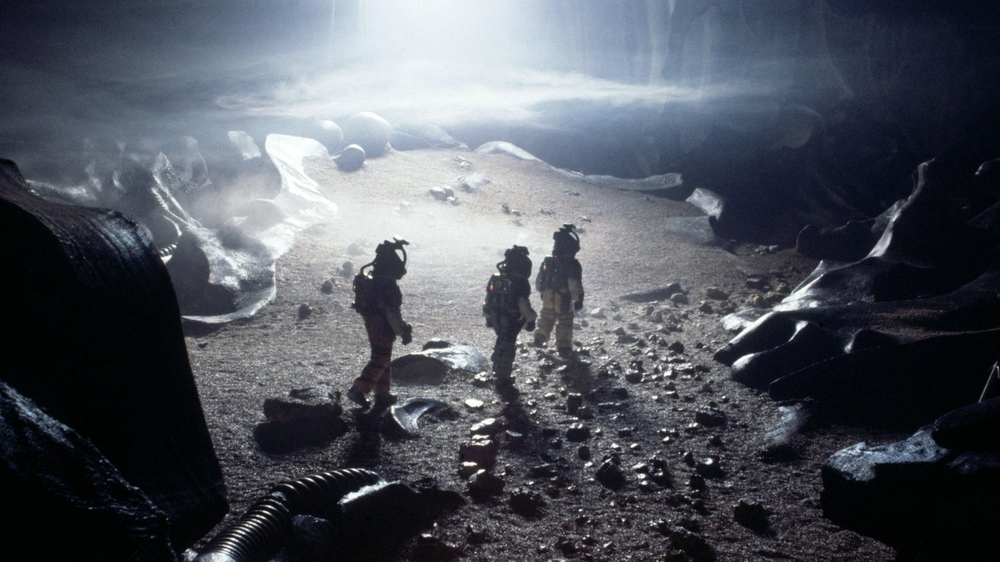
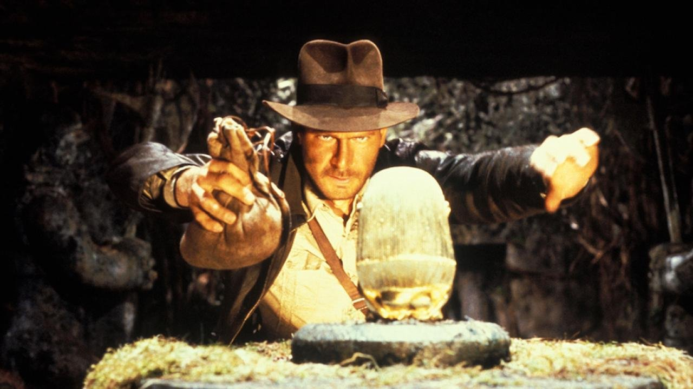
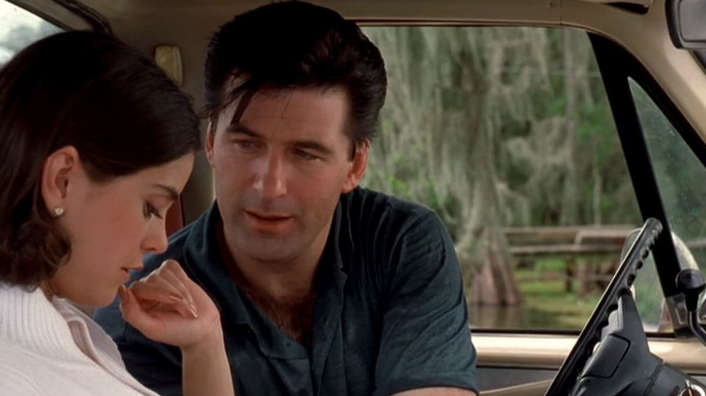

Ce soir, on rembobine.
La série documentaire qui ressort des étagères les films oubliés de l'ère VHS. Un film, un souvenir, une cassette qu'on remet dans le lecteur.
THRILLERS · POLARS · ACTION · SÉRIES B
NOUVEAU Le Pont de la rivière KwaïUn film oubliéThrillers, polars, action, séries B : ceux que la VHS a portés et que le temps a effacés.
Un souvenirChaque épisode part d'une cassette : achetée, enregistrée à la télé, prêtée par un grand-père.
Un épisodeUn article en huit séquences, un extrait vidéo, et le podcast à écouter.
DERNIERS ENREGISTREMENTS
Nouvelles cassettes

▶ PLAYLe Pont de la rivière KwaïThe Bridge on the River Kwai
1957 — David Lean · Alec Guinness

▶ PLAYMiami ViceDeux flics à Miami
1984 — NBC · Don Johnson

▶ PLAYLes blancs ne savent pas sauterWhite Men Can't Jump
1992 — Ron Shelton · Wesley Snipes, Woody Harrelson
Agence AcapulcoAcapulco H.E.A.T.
1993 — M6 · Catherine Oxenberg

▶ PLAYAlarme fataleLoaded Weapon 1
1993 — Gene Quintano · Emilio Estevez

▶ PLAYTonnerre mécaniqueStreet Hawk
1985 — ABC · Rex Smith
LE VIDÉOCLUB
Les saisons

Saison 1
Douze films pour ouvrir le vidéoclub, de Harley Davidson à Dolph Lundgren.

Les Suites
Six suites découvertes avant l'original. Qu'a-t-on le droit de changer ?

Saga Alien
Une saga, quatre réalisateurs, quatre visions du même cauchemar.

Indiana Jones
Un chapeau, un fouet, trois aventures. La trilogie qui a inventé un héros.

Saison 2
Douze nouvelles cassettes, de Vengeance Froide à Turbulence.

Saison 3
En cours d'enregistrement.
Saison 4
Au programme : Terminal Velocity, Étroite surveillance, Indiscrétion assurée, Kickboxer 5 : Le Dernier Combat, Chasse à l'homme…
LE PETIT ÉCRAN
Séries TV cultes
CINÉMA D'HIER
Les classiques
SOMEDAY
Podcast
Les épisodes à écouter, cassette dans le lecteur : les films, leurs coulisses et les souvenirs qui vont avec.
CASSETTES À VENDRE
Boutique
Cassettes VHS chinées d'époque, jaquettes d'origine, à vendre à l'unité.
MANIFESTE
Les films qu'on n'oublie pas.
Pas les classiques. Les autres.
Il y a des films qu'on n'a jamais vus au cinéma. Des films qu'on a découverts un samedi soir avec son grand-père, une cassette enregistrée par son père, une jaquette découpée dans Télé K7, un écran qui grésille.
SOMEDAY est une série documentaire consacrée aux thrillers, films d'action, néo-noirs et séries B américains de l'ère VHS : ceux que le temps a effacés, ceux que la VHS a portés, ceux dont on se souvient sans savoir pourquoi.
La série documentaire : les épisodes, le podcast, le vidéoclub et sa boutique.
Le studio de création lyonnais qui produit SOMEDAY et réalise des projets d'image pour des marques. Découvrir le studio →
La cassette est dans le lecteur. On rembobine.